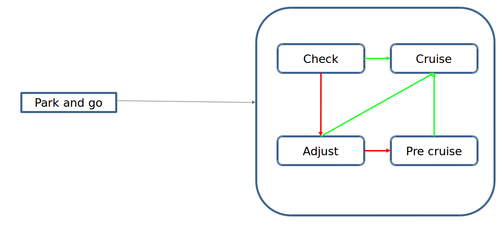

PARKING SCENARIO
Introduction
Apollo planning is scenario based, where each driving use case is treated as a different driving scenario.
There are three scenairos, park and go, pull over and valet parking, which related to park planning.
park and go: the park and go scenario was designed to handle curb side parking, planning a new trajectory to the next destination and then driving along that trajectory. This scenario is extremely useful in situations like curb-side delivery or passenger pickup or drop-off.
pull over: the pull over scenario was designed especially for maneuvering to the side of the road upon reaching your destination like for curb-side parallel parking.
valet parking: the valet parking scenario was designed to safely park your ego car in a targeted parking spot.
Where is the code
Please refer park & park and go.
Code Reading
All three scenarios contain specific stages, the function of scenarios are realized through the conversion of stages. Thus, figure out the process of stages conversion is the key to understand this code.
PARK AND GO SCENARIO
This scenario consists of four stages, check stage, adjust stage, pre cruise stage and cruise stage.
check stage:
In check stage, by calling
checkadcreadytocruise()to check whether ADC’s gear info, ADC’s velocity, obstacle position, ADC’s heading and ADC’s lateral station meet the requirements.
bool CheckADCReadyToCruise( const common::VehicleStateProvider* vehicle_state_provider, Frame* frame, const ScenarioParkAndGoConfig& scenario_config);
If ADC is ready to cruise, check stage is finished and we switch to cruise stage. Otherwise we switch to adjust stage.
adjust stage:
In adjust stage, we run open space planning algorithms to adjust ADC position.
bool ExecuteTaskOnOpenSpace(Frame* frame);
Once position adjustment is done, we check whether ADC reaches the end of trajectory.
Then we check whether ADC is ready to cruise by calling
CheckADCReadyToCruise().If ADC is ready to cruise and reaches the end of trajectory, adjust stage is finished.
If steering percentage within the threshold, we switch to cruise stage.
Otherwise we reset init position of ADC and switch to pre cruise stage.
void ResetInitPostion();
Otherwise ADC stay in adjust stage to adjust ADC position.
pre cruise stage:
In pre cruise stage, we run open space planning algorithms to adjust ADC with the init position.
Then we check whether the steering percentage within the threshold.
If so, pre cruise stage is finished and we switch to cruise stage.
Otherwise ADC stay in pre cruise stage.
cruise stage:
We run an on lane planning algorithms to adjust ADC position.
bool ExecuteTaskOnReferenceLine( const common::TrajectoryPoint& planning_start_point, Frame* frame);
Then we check whether the lateral distacne between ADC and target line within the threshold.
ParkAndGoStatus CheckADCParkAndGoCruiseCompleted( const ReferenceLineInfo& reference_line_info);
If so, cruise stage is finished and quit park and go scenario is done.
Otherwise ADC stay in cruise stage until ADC cruises to a desired position.
The conversion of stages can be seen in .
PULL OVER SCENARIO
This scenario consists of three stages, approach stage, retry approach parking stage and retry parking stage.
approach stage:
We run an on lane planning algorithms to approach pull over target position.
At first, we check path points data to see whether the s, l and theta error between ADC and the target path point within the threshold.
If so, the pull over status is set to PARK_COMPLETE.
Otherwise we add a stop fence for adc to pause at a better position.
However, if we can’t find a suitable new stop fence, approach stage is finished and we switch to retry appoach parking stage.
PullOverStatus CheckADCPullOverPathPoint( const ReferenceLineInfo& reference_line_info, const ScenarioPullOverConfig& scenario_config, const common::PathPoint& path_point, const PlanningContext* planning_context);
Then we check whether adc parked properly.
If ADC pass the destination or park properly, approach stage is finished and pull over scenario is done.
If adc park failed, approach stage is finished and we switch to retry appoach parking stage.
PullOverStatus CheckADCPullOver( const common::VehicleStateProvider* vehicle_state_provider, const ReferenceLineInfo& reference_line_info, const ScenarioPullOverConfig& scenario_config, const PlanningContext* planning_context);
retry approach parking stage:
We run an on lane planning algorithms to reach the stop line of open space planner.
Check whether ADC stop properly.
bool CheckADCStop(const Frame& frame);
If so, retry approach parking stage is finished and switch to retry parking stage.
retry parking stage:
We run an open space planning algorithms to park.
Check whether ADC park properly(check distance and theta diff).
bool CheckADCPullOverOpenSpace();
If so, retry parking stage is finished and pull over scenario is done.
Otherwise ADC stay in the stage until ADC park properly.
The conversion of stages can be seen in .
VALET PARKING SCENARIO
This scenario consists of two stages, approach parking spot stage and parking stage.
approach parking spot stage:
We run an on lane planning algorithms to approach the designated parking spot.
ADC cruises to a halt once it has found the right stopping point required in order to reverse into the parking spot.
bool CheckADCStop(const Frame& frame);
If stop properly, approach parking spot stage is finished and switch to parking stage.
Otherwise ADC stay in the stage until it approaches to desired parking spot.
parking stage:
Open Space Planner algorithm is used to generate a zig-zag trajectory which involves both forward and reverse driving (gear changes) in order to safely park the ego car.
The conversion of stages can be seen in
 .
.